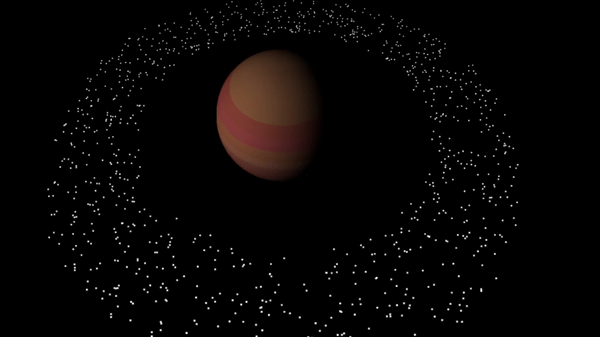
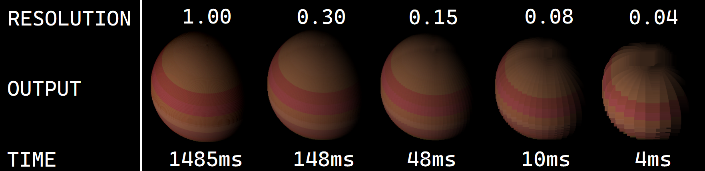
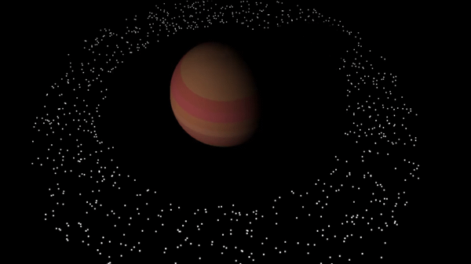

Boron
This is a long one.
EPIC ANIMATED BACKGROUND
I've been working on this 3D animated wallpaper based on the 2D one I made for the website. It took much sweat, tears, and
linear algebra (gross) to get here. Basically at 80% of the way through, I stopped development as classes got hard,
obligations crept in, and in general my time getting thin. It's unfortunate, I can either not be a shut-in or not
get anything done.
Well, I want to talk about since there's some things I find interesting about it. Below is an animated gif
showing what it looks like right now. This is a boring configuration for demonstration purposes BTW,
one can change the angles and sizes of things and stuff.

To preface, all of it is vanilla js and whatnot, wanted to do it all myself. About the "stars" (particles? what are these anymore): I've modeled them parametrically using real physics equations. It's a moderate pain in the ♥♥♥ for elliptical orbits, but it's okay. Getting all of the "stars" to render properly, though, was a big problem for a while since I was using a linear approximate (unknowingly). It really gave me the feeling for a while that something was wrong but just having no idea what. Well, I eventually realized I was an idiot and then just used the correct trigonometric function. ♥♥♥♥ linear algebra.
The part I really like is how the planet is created. I chose not to deal with rendering a model, so instead the planet is parametrically generated (I don't know what the correct terminology is here). The general process is: have a 2D color map (right now it's just lines) -> draw points along curved lines with color (shadows are also applied in this step) -> fix sizing and transparency.
A big slowdown earlier in development was load times generating this. Due to the algorithm used, the generation time is proportional to about the square of the "linear resolution" times some other constant variables. Anyways, I was generating with about 3x the linear resolution I am now (originally 1.0), so after turning that down, generation time went from about 1.5s into 150ms (with other variables set at the same values). Still kind of sucks, but I don't know if better can be done in js with canvases.
Here's what it looks like at various resolutions. The lower resolutions turn out funny.

As a bit of an aside, it is insane how consistent these time measurements are. I remembered the value for 1.0 resolution (1485ms) from the last time I took them. What's going on there?
There's one more thing I'd like to show off about this that I haven't yet, which is that the main body will cast shadows on the "stars" (what the ♥♥♥♥? these aren't stars!) if the light vector is angled correctly.

It doesn't show shadow transition very will in video but it is there.
The goal is to put this as an option or maybe the default on this website, and also to make it a Wallpaper Engine background. It works well in Wallpaper Engine, but notably is much less performant on a browser, so I'll have to see. Either way, the most performance-taxing thing on the site right now isn't even the background, so perhaps adjustments can be made.
My Laptop's NEVERENDING Battery Problem
I have a Thinkpad P16 Gen 2. It's sometimes classified as a "portable workstation" rather than a laptop.
I did not truly grasp what the power draw of the machine was going to be. When I was doing basic computer ♥♥♥♥♥♥♥♥,
my battery got low, like 2 hours in. And, I had a 94Wh battery. In the world of laptops, thats big as ♥♥♥♥, and it was almost emptied in a matter of
~two hours. I did some measurements, and it was using 40W on idle.
Anyway, this was on Windows 11, which the laptop came with. I suspected that power would be a problem on Windows, and was already planning on trying out Linux
at least for the power savings. And damn, I was not expecting for there to be that big of a difference. But, on Linux, it was ♥♥♥♥♥♥♥ fifteen watts.
WHATTTT??? Microsoft, what the ♥♥♥♥ are you doing. 25W extra straight into the processor for ♥♥♥♥♥♥♥ what???
I tried the power saving ♥♥♥♥♥♥♥♥ and it only got down to 30W.
Anyways, now I laugh (in pity) at the users who complain about battery life on this laptop because for where they get two hours, I get like five.
Not that it is great still, since it becomes a lot more under load. But at least I can last five hours on a browser!
There's two reasons this topic has become important to me again. One is that my battery has noticably degraded down from 94Wh -> 78Wh due to my mistreatment of it.
The second is that I am soon to be going on a camping trip, which will involve a long ♥♥♥ car ride and some other potential downtime.
I have a baseline power draw of about 15W. GPU idles at 2.5W, disabling that brings it down to 12.5W. After this, I started making a script
to further reduce this before I learned of tlp's existence.
I started using tlp, which brought it down to 8W idle. There's still a little bit left to do that tlp seemingly doesn't cover
(the largest being to prioritize my processors E-cores or maybe disabling the P-cores outright). From setting it up, I also got the added benefit of having custom
maximum charge levels to extend my battery's life.
I also need to find out how to power it without an wall connection. My big, bulky laptop doesn't support USB charging.
Luckily, this was solved by getting an adapter from their proprietary charging standard "Slim-Tip" to USB-C.
Though still, the battery can only be charged with a high-power connection
(I don't know exactly how high, but 100W works so far). It shouldn't even be a voltage issue,
since the adapter supposedly boosts the voltage up to 20V if required anyways.
This is going to be annoying to figure out. Hopefully I can figure it out, since there's some computer ♥♥♥♥
I want to do.
Two Cool Games I Played Recently
BAIONLENJA
BAIONLENJA is a Source-engine-esque movement-based game. I try to stay away from
movement-based games because they tend to be easy and not super complex (there's also a large market of movement-based games where you don't even really go fast... what's the point?).
BAIONLENJA emulates Source/Quake-inspired movement (bhop, strafe, rocket jump), though. I thought it was kind of a corny idea at first, but it actually works.
I also appreciate the stylistic direction of the game. It's design is reminiscent of old games-- big blocky rooms, a clean low-poly look. There's also
an element of "wtf is even going on" and spookiness that adds to the experience. The game isn't full released yet, but I am excited for where it is going.
Video from the Steam page
Boomerang X
Boomerang X is much more of an arena shooter. I found it interesting
because your weapon (the boomerang) is also your movement utility. But it's also because your movement is your weapon, and that your range is limited, that it
makes you put a lot of effort into pathing. The way you attack an enemy matters a lot. There is a really strong audiovisual identity, one that you can really only understand
from playing it. I think this game is a prime example that styling matters a whole lot more than raw visual fidelity.
I'm pretty sure the studio is dead, though. Oh well. The game is also kind of expensive, but there is a demo.